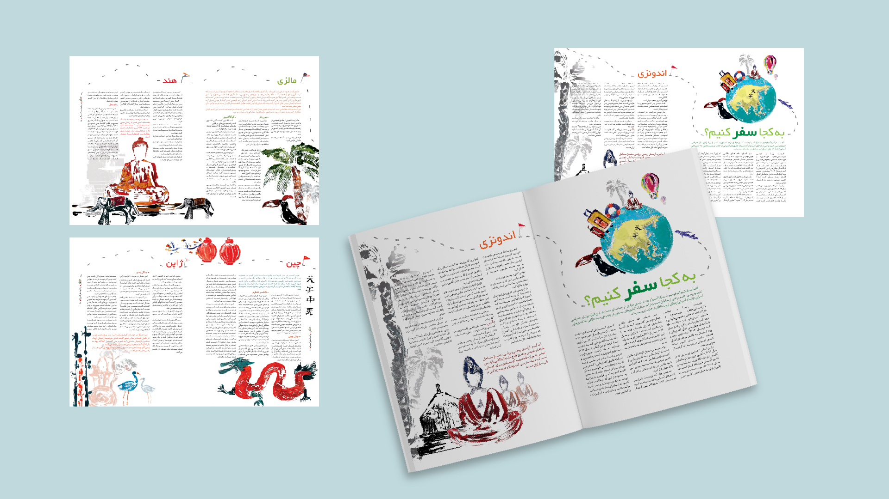

TRAVEL MAGAZINE
Editorial Design · Illustration · Print

Project Overview
Travel Magazine
Travel Magazine is an editorial design project exploring travel and culture through illustration, typography, photography, and print.
The project combines hand-drawn illustrations with editorial layout design, developing the visual language from early sketches and page compositions through to the final printed magazine.
Editorial Exploration
Brainstorming
Visual Development
Sketches
Editorial Design
Layout Development
Production
Print Process
Final Outcome